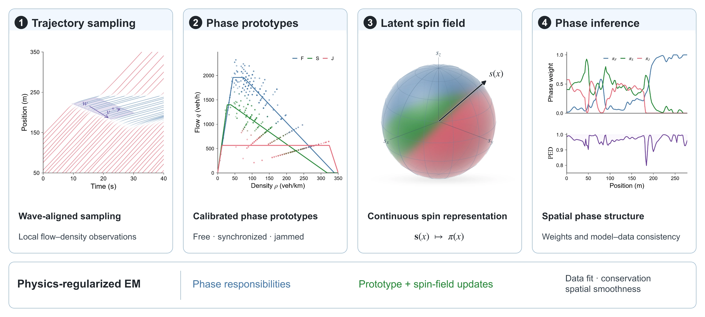

Reading traffic phases from vehicle trajectories

How can vehicle trajectories reveal the structure of a traffic transition? With SpinFlow, I study traffic phases as a continuous spatial mixture. Inspired by the Heisenberg model, we represent competition among free flow, synchronized flow, and wide moving jams through a latent spin field. Physics-regularized expectation–maximization infers this field from vehicle trajectories; the Phase Equilibrium Degree measures how well the inferred mixture agrees with the data. Across four real-world datasets, flow reconstruction reaches an R² of 0.940, and detected transitions align with documented lane-drop and on-ramp features. What interests me is the additional structure this representation makes visible: where phases coexist and where their balance breaks down. Turning that information into a useful intervention signal remains a separate control problem.